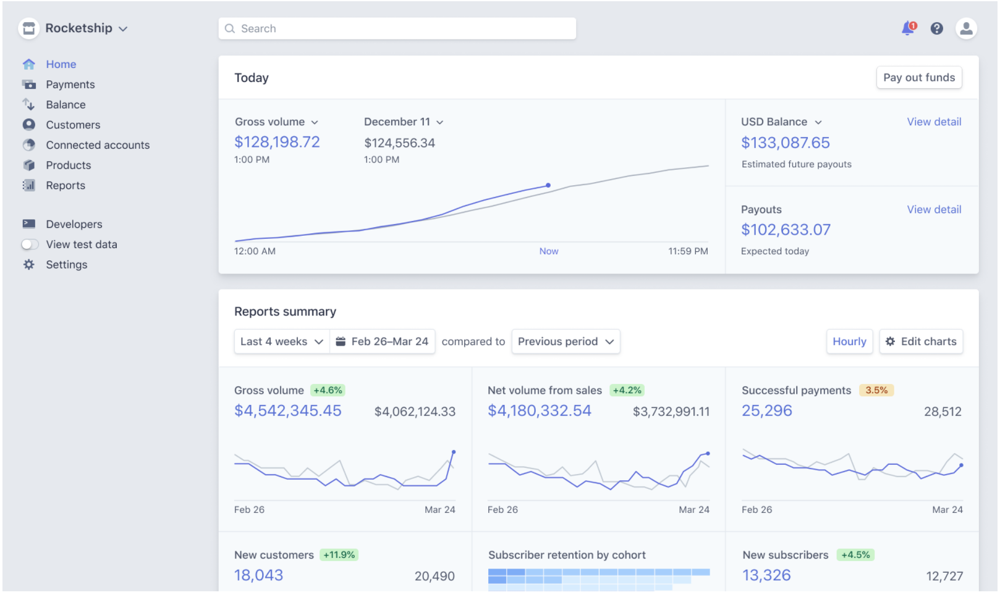

Query and analyze Stripe data in Python¶
MRR and Churn calculations
Stripe is an online payment company that offers software and APIs for processing payments and business management. I love that Stripe has different APIs for different languages, which makes people’s lives a lot easier. I primarily use the Stripe Python API. To install:
pip install --upgrade stripe
You can also do conda install stripe. But the most recent version of the library doesn’t seem to be available on Conda yet. The version I am using is Stripe 2.55.0.
Next, you will need an API key to access the stripe API. Go to stripe.com — Devlopers — API keys, and then click “+ Create secret key” to get an API key.
stripe.api_key = YOUR_API_KEY
stripe.api_version = "2020-08-27"
Then you can define the stripe api_key and also don’t forget to define the api_version. I am using the most up-to-date version. Some functionalities/data formats will be different if you use a different version of the API.
Get Stripe data¶
Great, now everything is set up we can get started to query stripe data. Here I wrote a function to get the data.
Stripe API contains many resources (datasets). In this function, we can pass in the name of the resource to get the corresponding data. For example, the basic format to get the subscription data is
stripe.Subscription.list(). We usegetattrin our function in order to include resource as a parameter in the function.We use the list API to bulk fetch the resources.
Each API call has a limit of max 100 objects to be returned. That’s why we use
auto_page_iter()to automatically paginate results to list.
With this function, we can simply call the function to get different resources for all time or defined time periods. For example:
Customer data:
stripe_get_data('Customer')Event data:
stripe_get_data('Event')(only returns events for the past 30 days)Invoice data:
stripe_get_data('Invoice')Balance Transaction data:
stripe_get_data('BalanceTransaction')Subscription data:
stripe_get_data('Subscription', start_date=datetime(2020,9,1), end_date=datetime(2020,10,1))(if not specified, only returns “active” and “past_due” status subscriptions).
Other resources can be found in the Stripe API docs. You can query other resources using this function as well.
Stripe Billing Analytics Dashboard¶
Stripe Billing Analytics Dashboard provides a summarized view of your account, which provides a lot of useful information like MRR, churn, and so on. Unfortunately, there is not an API for the Stripe Billing Analytics Dashboard (I actually contacted the support and asked about this). So, I can’t get the dashboard out to Python directly. But Stripe does provide some guidance on how they calculate those metrics. I followed the instructions and calculated the MRR and churn rate.
 Source: stripe.com/docs/dashboard
MRR¶
“Monthly Recurring Revenue (MRR) can be thought of as the total amount of monthly revenue you can reliably expect to receive on a recurring basis. It is one of the most important metrics for a SAAS business to track, as it provides a forward looking measure of growth and predicted revenue… You can calculate the approximate MRR by summing the monthly-normalized amounts of all subscriptions from which payment is being collected at that time.”
The syntax for calculating MRR is shown below.
First, we need to get all the subscription data. Here I set
status="all"to get all subscription data including canceled subscription. We can also not include this argument to only get the “active” and “past_due” status since we don’t use the “canceled” status in this calculation.Then we get the information about the subscription plan, i.e., amount, and interval (yearly or monthly plan).
If there is a discount on someone’s plan, we get the information about the discount.
Next, we calculate the normalized monthly plan amount by normalizing the yearly amount and also applying the discount.
Finally, MRR is calculated as the sum of the normalized monthly plan amount for those who have an “active” or “past_due” status.
This calculation is based on the Stripe article and a blog post. The resulting value looks slightly different from the one shown on the dashboard. But it’s very close.
Churn rate¶
“The churn rate is measured by the sum of churned subscribers in the past 30 days divided by the number of active subscribers as of 30 days ago, plus any new subscribers in those 30 days.”
Below is the code for calculating the churn rate.
First, we calculate the number of churned subscribers in the past 30 days. We can either use the event data or we can use the subscription data and see who canceled the subscription in the past 30 days.
Second, we calculate the number of active or past-due subscriptions.
Then we can calculate the churn rate based on these two numbers.
This calculation is based on the descriptions from this article.
Now you know how to query Stripe data and calculate MRR and churn rate. Hope you enjoy this article. Thanks!
References:
https://stripe.com/docs/api
https://support.stripe.com/questions/billing-analytics-dashboard
By Sophia Yang on October 23, 2020